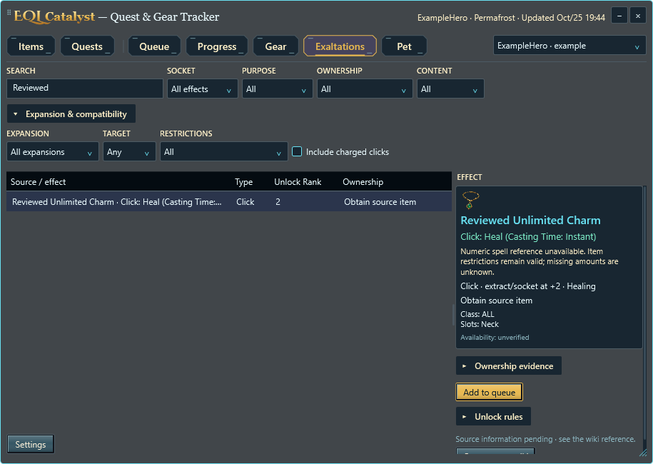
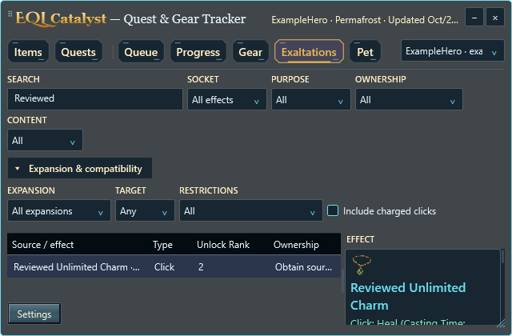

Charged clicks are hidden by default. Include charged clicks is in Expansion & compatibility; it also controls pet-slot choices during the current app run. Showing a candidate does not confirm that conversion is possible. Existing saved effects remain intact.


Actual Windows controls and synthetic evidence. Three themes and 100–300% rendering; physical multi-monitor acceptance remains separate. Help